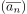
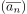
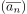
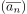
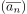

Sei eine Folge in . konvergiert g.d.w.  konvergiert.
Author: Anton Zakrewski
Email: anton.zakrewski@campus.lmu.de
 eine Folge in
eine Folge in  .
konvergiert g.d.w.  konvergiert.
eine Folge in .
konvergiert g.d.w.  konvergiert.
.
konvergiert g.d.w.  konvergiert.
eine Folge in .
konvergiert g.d.w.  konvergiert.